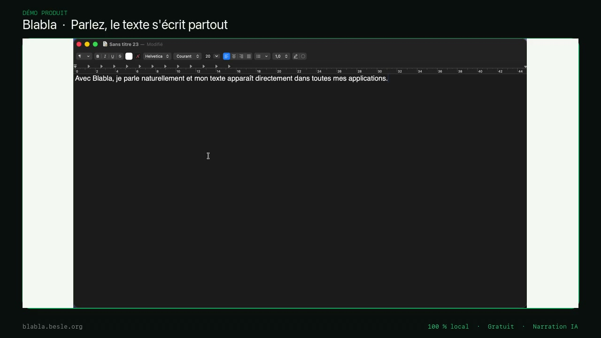

Blabla vit dans votre barre de menu. Vous maintenez une touche, vous parlez, et le texte s’insère là où se trouve votre curseur : dans Mail, Slack, un navigateur, un éditeur, n’importe quel champ texte.
Blabla lives in your menu bar. Hold a key, speak, and the text is inserted wherever your cursor is: in Mail, Slack, a browser, an editor, any text field.

Une dictée privée, sur votre machine
La transcription tourne entièrement sur le Neural Engine de votre Mac. Votre voix n’est jamais envoyée vers un serveur. Après le téléchargement initial du modèle, tout fonctionne même sans connexion.
Votre voix reste sur votre Mac.
Private dictation, on your machine
Transcription runs entirely on your Mac’s Neural Engine. Your voice is never sent to a server. After the one-time model download, everything works even offline.
Your voice stays on your Mac.
Étape 1 : installer Blabla
- Ouvrez le fichier .dmg téléchargé, puis glissez Blabla dans votre dossier Applications.
- Lancez Blabla. Une icône apparaît dans la barre de menu (en haut à droite). L’app n’apparaît pas dans le Dock, c’est normal.
- Au premier lancement, Blabla télécharge son modèle de transcription (~1,5 Go). Cela ne se produit qu’une seule fois. Suivez la progression dans Réglages → Transcription.
Un Mac Apple Silicon (M1 ou plus récent) sous macOS 26 ou ultérieur. Une connexion Internet est nécessaire uniquement pour le téléchargement initial du modèle.
Step 1: install Blabla
- Open the downloaded .dmg, then drag Blabla into your Applications folder.
- Launch Blabla. An icon appears in the menu bar (top-right). The app doesn’t show in the Dock, that’s expected.
- On first launch, Blabla downloads its transcription model (~1.5 GB). This happens only once. Track progress in Settings → Transcription.
An Apple Silicon Mac (M1 or newer) running macOS 26 or later. Internet is needed only for the initial model download.
Étape 2 : accorder les autorisations
Un assistant s’ouvre au premier lancement. Blabla a besoin de trois autorisations macOS pour fonctionner :
- Microphone : pour vous entendre. Une demande apparaît automatiquement.
- Accessibilité : pour écrire le texte transcrit dans l’app active.
- Surveillance de l’entrée : pour détecter votre touche de dictée.
Pour l’Accessibilité et la Surveillance de l’entrée, activez Blabla dans Réglages Système → Confidentialité et sécurité, puis cliquez « Re-vérifier ». Selon la version de macOS, un redémarrage de l’app peut être nécessaire pour que la Surveillance de l’entrée prenne effet.
Step 2: grant permissions
A wizard opens on first launch. Blabla needs three macOS permissions to work:
- Microphone: to hear you. macOS asks automatically.
- Accessibility: to type the transcribed text into the active app.
- Input Monitoring: to detect your dictation key.
For Accessibility and Input Monitoring, enable Blabla in System Settings → Privacy & Security, then click "Re-check". Depending on your macOS version, an app restart may be needed for Input Monitoring to take effect.
Étape 3 : dicter
- Cliquez dans n’importe quel champ texte.
- Maintenez la touche ⌥ Option droite (à droite de la barre d’espace).
- Parlez pendant que vous maintenez la touche.
- Relâchez. Le texte transcrit s’insère immédiatement.
Pendant la dictée, une petite carte apparaît à l’écran :
Elle affiche le niveau du micro, la durée et l’activité. Attrapez-la pour la déplacer où vous voulez : sa position est mémorisée. Pour annuler une dictée en cours, appuyez sur Échap.
Vous préférez une autre touche ou un mode « appui unique » plutôt que le maintien ? Tout se règle dans Réglages → Trigger.
Step 3: dictate
- Click into any text field.
- Hold Right ⌥ Option (to the right of the space bar).
- Speak while holding the key.
- Release. The transcribed text is inserted immediately.
While you dictate, a small card appears on screen:
It shows the mic level, duration and activity. Grab it to move it wherever you like: its position is remembered. To cancel a dictation in progress, press Esc.
Prefer a different key, or a single-tap mode instead of hold-to-talk? It’s all in Settings → Trigger.
Enregistrer un échange à plusieurs
Depuis la version 1.6.0
- Démarrez la dictée avec votre geste habituel.
- Maintenez R ou r pendant deux secondes, avant la fin des dix premières secondes. En mode maintien, gardez aussi la touche de dictée enfoncée jusqu’à la bascule.
- Blabla passe en mode CR échange, en conservant le début de l’enregistrement. Un appui sur votre touche de dictée arrête l’échange et lance la transcription.
Le maintien de R se règle de 1 à 4 secondes et la fenêtre de bascule de 5 à 30 secondes dans Réglages → Trigger → CR échange. Vous pouvez aussi désactiver ce geste. Le raccourci ⌃⌘R démarre ou arrête directement un échange ; le menu CR échange… ouvre sa fenêtre.
Blabla transcrit l’audio du microphone et distingue les intervenants A, B, C…, que vous pouvez renommer. Les paroles simultanées, l’écho ou des voix proches peuvent produire des erreurs d’attribution. Les durées maximales proposées sont de 1, 2, 4 ou 8 heures. La capture directe du son d’une visioconférence n’est pas incluse.
L’original est sauvegardé progressivement sur disque et reste disponible pour reprendre après une erreur de transcription ou de nettoyage. Le texte brut, le texte corrigé et le compte rendu sont séparés. Une panne brutale peut perdre la fin encore en transit ; un enregistrement réel prolongé reste à valider avec votre micro. Comptez environ 690 Mo par heure et par canal à 48 kHz. L’original est conservé jusqu’à sa suppression manuelle ; il est exportable en CAF.
Le traitement de l’échange est entièrement local. Les modèles de voix nécessitent environ 14 Mo de téléchargement initial. La correction et le compte rendu utilisent Apple Intelligence lorsqu’il est disponible et activé, sans repli vers un service en ligne. Sinon, l’audio et la transcription restent accessibles. Relisez les attributions et la synthèse avant de les partager.
Record a conversation with several people
New in version 1.6.0
- Start dictation with your usual gesture.
- Hold R or r for two seconds, completing the hold within the first ten seconds. In hold-to-talk mode, keep the dictation key held until the switch completes.
- Blabla switches to CR échange, including the opening audio. Press your dictation key once to stop the conversation and transcribe it.
In Settings → Trigger → CR échange, set the hold to 1–4 seconds and the opening window to 5–30 seconds, or disable the gesture. ⌃⌘R also starts or stops a conversation directly. The CR échange… menu opens its window.
Blabla transcribes microphone audio and labels speakers A, B, C…, with editable names. Overlapping speech, echo and similar voices can cause attribution errors. Available recording limits are 1, 2, 4 or 8 hours. Direct capture of video-call system audio is not included.
The original is saved progressively to disk and kept for recovery after transcription or cleanup errors. Raw text, corrected text and meeting notes remain separate. An abrupt failure can lose the tail still in transit; extended real-world recording remains to be validated with your microphone. Allow about 690 MB per hour per channel at 48 kHz. Originals are kept until manually deleted and can be exported as CAF.
Conversation processing runs entirely on-device. Speaker models need a one-time download of about 14 MB. Correction and meeting notes use Apple Intelligence when available and enabled, with no online fallback. Otherwise, audio and transcription remain available. Review speaker labels and meeting notes before sharing.
Commandes vocales
Commencez votre dictée par un mot-clé pour transformer le texte au lieu de l’insérer tel quel :
- « Calcule. 23 fois 47. » →
1081(calcul hors ligne, instantané) - « Traduis en anglais. J’ai faim. » →
I’m hungry.
Vous pouvez créer vos propres commandes dans Réglages → Commandes.
Voice commands
Start your dictation with a keyword to transform the text instead of inserting it as-is:
- "Calculate. 23 times 47." →
1081(offline, instant) - "Translate to French. I’m hungry." →
J’ai faim.
You can create your own commands in Settings → Commands.
Nettoyage par IA (optionnel)
Par défaut, Blabla insère la transcription brute, et elle est déjà excellente. Si vous le souhaitez, le nettoyage IA retire les hésitations (« euh »), corrige les fautes et soigne la ponctuation.
Activez-le dans Réglages → IA. Il nécessite une clé OpenAI, à obtenir en quelques minutes :
- Créez un compte sur platform.openai.com.
- Ajoutez un petit crédit (5 $ suffisent pour des mois).
- Générez une clé API, puis collez-la dans Réglages → IA.
La clé est stockée dans votre trousseau macOS. La transcription reste locale. Si vous choisissez un fournisseur IA en ligne pour la correction, seul le texte nécessaire (jamais l’audio) lui est transmis selon vos réglages.
AI cleanup (optional)
By default, Blabla inserts the raw transcription, and it’s already excellent. If you like, AI cleanup removes filler words ("um"), fixes typos and tidies punctuation.
Enable it in Settings → AI. It needs an OpenAI key, which takes a few minutes to get:
- Create an account at platform.openai.com.
- Add a small amount of credit ($5 lasts months).
- Generate an API key, then paste it into Settings → AI.
The key is stored in your macOS Keychain. Without AI cleanup, Blabla stays 100% local and offline. With cleanup on, only the text (never the audio) is sent to OpenAI for correction.
Ce que vous pouvez régler
- Trigger : la touche de dictée et son mode (maintien, appui unique, double-tap).
- Audio : le micro, l’affichage de la carte, la pause automatique de la musique, les sons de démarrage/arrêt.
- Transcription : le modèle Whisper, la langue, et un vocabulaire personnalisé (vos noms propres et termes métier).
- Insertion : comment le texte est écrit dans l’app cible.
- Style : des préréglages de ton pour le nettoyage IA.
- Performance : le temps que prend chaque dictée.
Le menu de la barre de menu affiche aussi votre temps de frappe économisé et donne accès à un historique cherchable de vos dictées.
Dans Historique → Tentatives et avis, vous pouvez préparer un diagnostic technique et consulter son contenu avant de l’envoyer aux développeurs. Ce rapport ne contient ni texte dicté ni audio. Aucun diagnostic n’est envoyé automatiquement. Les rapports reçus sont accessibles uniquement au développeur et supprimés après 30 jours ; la connexion réseau ne permet pas de garantir un anonymat absolu.
What you can tune
- Trigger: the dictation key and its mode (hold, single tap, double-tap).
- Audio: the microphone, the on-screen card, auto-pausing music, start/stop sounds.
- Transcription: the Whisper model, the language, and a custom vocabulary (your names and jargon).
- Insertion: how text is written into the target app.
- Style: tone presets for AI cleanup.
- Performance: how long each dictation takes.
The menu-bar menu also shows your time saved typing and opens a searchable history of your dictations.
Dépannage rapide
La touche ne déclenche rien
Vérifiez l’autorisation « Surveillance de l’entrée » dans les Réglages Système, puis redémarrez Blabla. C’est la solution la plus fréquente.
Le texte ne s’insère pas
Vérifiez l’autorisation « Accessibilité ». Le texte est de toute façon copié dans le presse-papier : vous pouvez toujours faire ⌘V.
Environnement bruyant
Activez « Environnement bruyant » dans Réglages → Audio : Blabla durcit ses seuils pour éviter d’inventer du texte sur du bruit.
Le téléchargement du modèle échoue
Sur une connexion lente, choisissez un modèle plus léger dans Réglages → Transcription : il se télécharge en quelques secondes.
Quick troubleshooting
The key does nothing
Check the "Input Monitoring" permission in System Settings, then restart Blabla. This is the most common fix.
Text won’t insert
Check the "Accessibility" permission. The text is copied to the clipboard anyway: you can always press ⌘V.
Noisy environment
Turn on "Noisy environment" in Settings → Audio: Blabla tightens its thresholds so it won’t invent text from noise.
Model download fails
On a slow connection, pick a lighter model in Settings → Transcription: it downloads in seconds.
Télécharger et essayer BlablaDownload and try Blabla
Être informé des nouveautés
Je vous écrirai seulement lorsqu’il y a une nouvelle version ou une information utile sur Blabla. Votre adresse ne sera ni vendue ni partagée.
Keep up with Blabla
I will only write when there is a new version or useful news about Blabla. Your address will not be sold or shared.
Une question ou une suggestion ? Écrivez à jrobert@besle.org.
A question or a suggestion? Email jrobert@besle.org.
Publié sur Besle.org · Une page par idéePublished on Besle.org · One page per idea